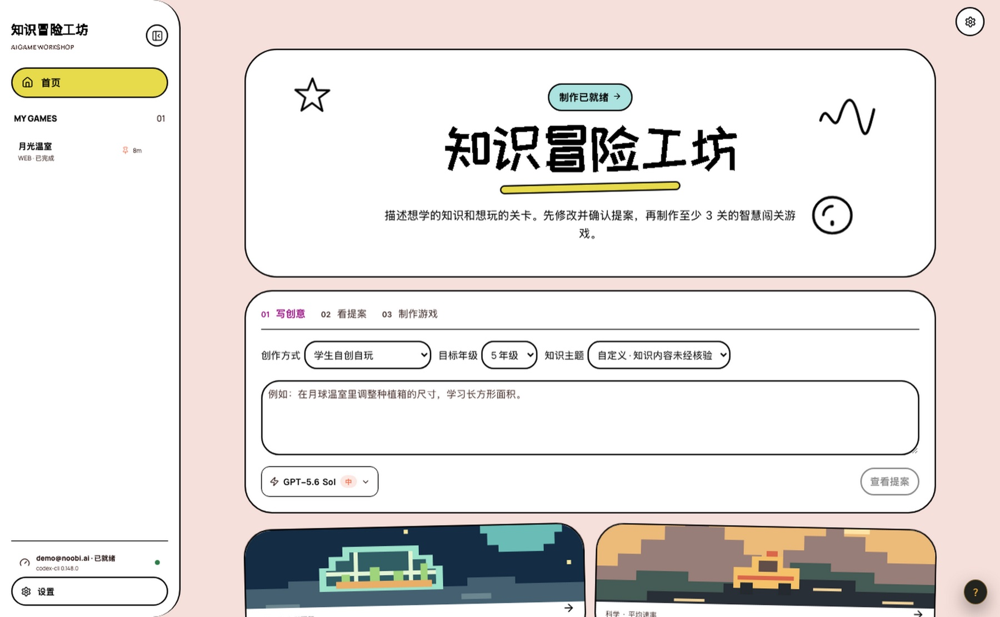
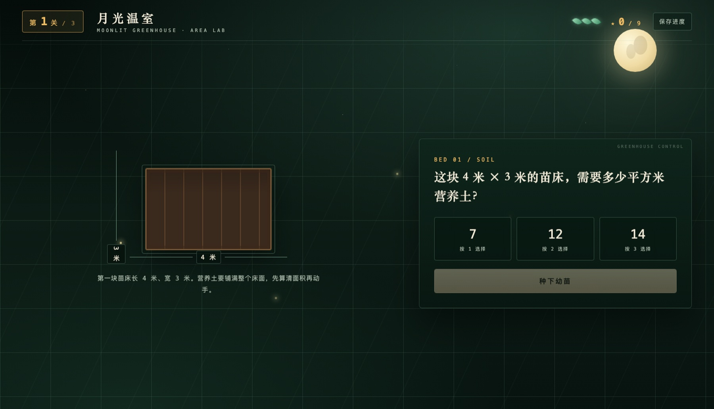
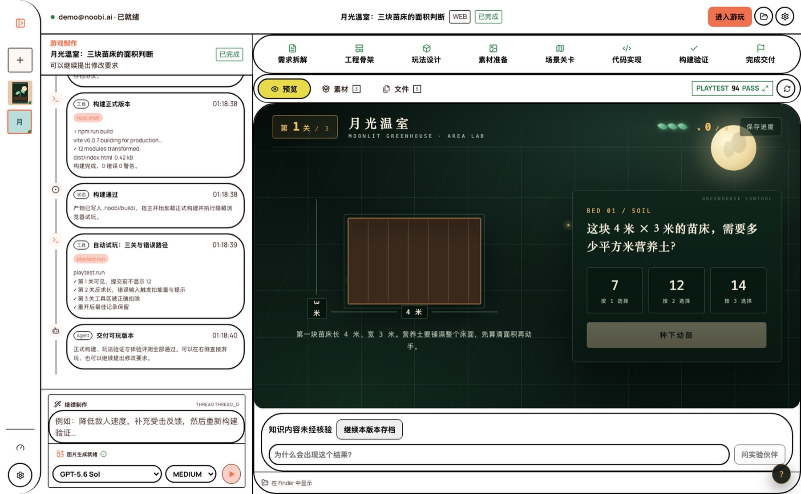

From prompt to playable从创意到可玩
The Agent picks Web or Godot 4, produces a real standalone project and previews it locally — not a mockup or a single HTML snippet.Agent 自行判断 Web 或 Godot 4，产出真实独立工程并在本地预览——不是示意图，也不是一段 HTML。
游戏工坊 gives Codex a bounded production loop: a read-only Planner scopes the work, an Implementer builds inside an isolated project, an independent Reviewer checks the result, and the host builds and playtests before delivery. Choose a 3–8 level knowledge adventure or free creation — the same review-gated loop handles both.
游戏工坊把 Codex 放进一条有边界的制作循环：只读 Planner 拆解任务，Implementer 在独立工程里实现，独立 Reviewer 检查真实结果，宿主完成正式构建与自动试玩后才交付。 可以选择 3–8 关的知识闯关，也可以自由创作——同一套审查循环都能处理。

Real UI, real playable output, mocked local backend. Open the knowledge sample, switch to free creation, replay a run, then inspect the generated project files — no install, no account. 真实界面、真实可玩产物，本地后端由演示数据模拟。打开知识闯关示例，或切到自由创作；重放一轮制作流程，再翻看生成的工程文件——不用安装，也不用登录。

EXAMPLE OUTPUTA grade-5 area-math adventure generated by the workshop: read the bed dimensions, submit an answer, lose energy on mistakes, harvest stars.工坊产出的五年级面积知识闯关：读尺寸、先判断再提交，答错扣能量，通关按表现结算星级。

PRODUCTION RUNWrite an idea, pick a knowledge adventure or free creation, then watch stages, tool calls, file writes and the playtest report stream into the workbench.写下创意，选择知识闯关或自由创作，然后看阶段推进、工具调用、文件写入与试玩报告依次出现在工作台里。
Note: the web demo mocks the Electron bridge. The desktop app runs the real Codex App Server, writes real files and executes real builds and playtests. 说明：演示版模拟了 Electron 桥接层；桌面版会运行真实 Codex App Server、写入真实文件，并执行真实构建与试玩。
Every stage has a bounded role, a writable surface and a verifiable output. Failed checks go back to the same Implementer instead of starting over. 每个阶段都有明确角色、可写边界与可验证产物；检查失败会交回同一个 Implementer 修复，而不是推倒重来。
The Agent picks Web or Godot 4, produces a real standalone project and previews it locally — not a mockup or a single HTML snippet.Agent 自行判断 Web 或 Godot 4，产出真实独立工程并在本地预览——不是示意图，也不是一段 HTML。
Planner → Implementer → Reviewer → formal build → automated playtest. Failed review, build or playtest checks trigger up to three repair rounds.Planner → Implementer → Reviewer → 正式构建 → 自动试玩；任一环节失败最多触发三轮有界修复。
A sandboxed hidden browser exercises the core controls, captures evidence and checks visible gameplay, animation continuity and runtime errors.隔离的隐藏浏览器会操作核心玩法、记录证据，检查可见画面、动画连续性与运行错误。
Images, music, speech, sound effects and 3D route through configured providers, Codex ImageGen, imported assets or procedural fallbacks.图片、音乐、语音、音效和 3D 可走配置的 Provider、Codex ImageGen、导入素材或程序化回退。
Every game is a normal local project: inspect the files, continue with Codex, commit to Git or take it outside 游戏工坊 entirely.每个游戏都是普通本地工程：检查文件、继续用 Codex 修改、提交 Git，或完全脱离游戏工坊使用。
Add media providers, Codex Skills, MCP servers, agent prompts, project templates, Godot export targets or an entirely different workbench UI.可增加媒体 Provider、Codex Skills、MCP Server、角色提示词、工程模板、Godot 导出目标或全新的工作台 UI。
The host — not the model — decides whether a game is finished. Each gate produces evidence: a plan, a diff, a review, a production build, a playtest report. 判定“完成”的是宿主，不是模型。每道关都留下证据：计划、改动、审查、正式构建、试玩报告。
Natural-language idea plus reference files, grade level and knowledge target.自然语言创意，加上参考文件、年级与知识目标。
A read-only Planner scopes levels, variables, failure paths and acceptance checks.只读 Planner 拆解关卡、变量、失败路径与验收标准。
The Implementer writes only inside the isolated game project directory.Implementer 只在隔离的游戏工程目录内写入。
An independent read-only Reviewer scores artifacts, knowledge and playability.独立只读 Reviewer 对产物、知识与可玩性评分。
The host builds production output and runs a hidden-browser playtest, then repairs if needed.宿主构建正式产物并执行隐藏浏览器试玩，必要时进入修复。
Repair loop. A failed review, build or playtest returns to the same Implementer with concrete evidence — capped at three rounds, so a run can fail honestly instead of looping forever. 修复回路。审查、构建或试玩失败会带着具体证据回到同一个 Implementer，最多三轮；宁可诚实失败，也不无限循环。
The desktop app is a macOS developer preview. It needs Node.js 22, a ChatGPT/Codex account and an available image route. 桌面版目前是 macOS 开发者预览，需要 Node.js 22、ChatGPT/Codex 账户和可用的图片生成路线。
git clone https://github.com/Mat11-oo/game-studio.git
cd game-studio
npm ci
npm run dev
First launch: Settings → Codex account to sign in. 游戏工坊 keeps an app-private Codex home and never overwrites your global ~/.codex.
首次启动：打开设置 → Codex 账户登录。游戏工坊使用应用私有的 Codex 目录，不会覆盖全局 ~/.codex。
Try the workbench in your browser first, then run the desktop app when you are ready for real Codex runs. 先在浏览器里试用工作台，准备好真实 Codex 制作时再运行桌面版。